Recent Projects
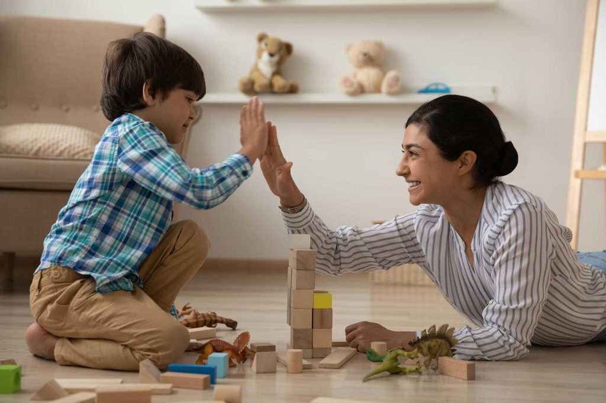
Neurofeedback-Driven Embodied Narrative Interfaces for Parent-Child Emotional Co-Regulation
Collaborator: Alissa Antle
All parents and their children face emotion regulation issues, especially during middle childhood. Customary social practices shift the sole responsibility to the parent, although both parties are often struggling in such scenarios. We propose that enabling parents and children to work together in co-regulating their emotions during times of stress can not only support more effective regulation but also improve parent-child bonds.
What Generative AI is Doing to Teens' Friendships, Sense of Connection, and Identity
Main Collaborators: Lana Yarosh, Mindy Zhao, and Anna Martin-Boyle
Generative AI can provide valuable support to challenging interpersonal interactions as third parties, but ethical issues such as overreliance threaten individuals' sense of relationship authenticity, which heavily impacts personally significant relationships such as friendship. We design and evaluate open-ended linguistic stylizations of AI generated conversation summaries (e.g., as poems) to encourage critical discourse during difficult conversations.
Selected Publications
"I Want It to Sound Like Me": Understanding Teenagers' Views of Generative AI-Mediated Communication in Friendship
Seraphina Yong, Minzhu Zhao, Anna Martin-Boyle, Conrad Flick, Svetlana Yarosh.
In Proceedings of IDC 2026 [Paper]
Poet-Weaver: Reflecting on Communication Failure in Personal Relationships With Stylized AI-Generated Conversation Digests
Seraphina Yong, Chi-Lan Yang, Atsushi Hashimoto, Hideaki Kuzuoka, Shigeo Yoshida.
In Proceedings of CSCW 2025 [Paper]
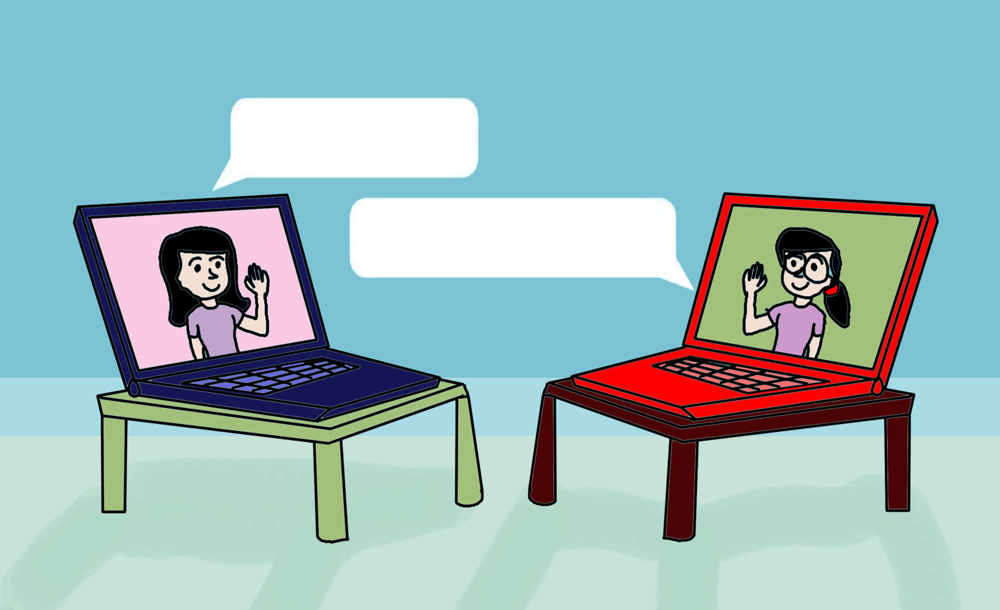
"I'm Petting the Laptop, Which Has You Inside It": Reflecting on Lived Experiences of Online Friendship
Seraphina Yong, Ashlee Milton, Evan Suma Rosenberg, Stevie Chancellor, Svetlana Yarosh.
In Proceedings of CSCW 2025 [Paper]
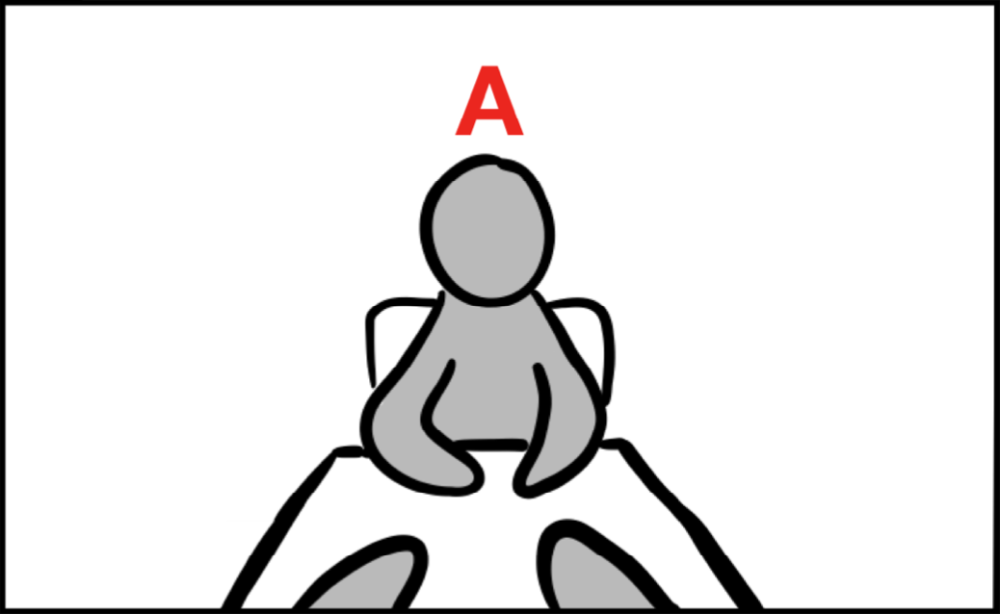
A Change of Scenery: Transformative Insights from Retrospective VR Embodied Perspective-Taking of Conflict With a Close Other
Seraphina Yong, Leo Cui, Svetlana Yarosh, Evan Suma Rosenberg.
In Proceedings of CHI 2024 [Paper]
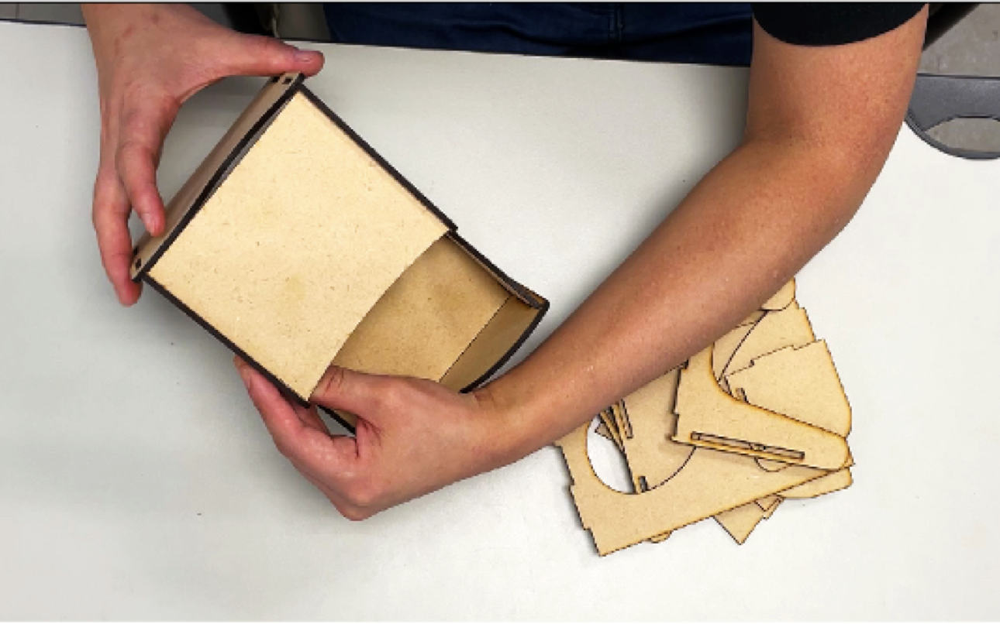
Understanding (Non-)Visual Needs for the Design of Laser-Cut Models
Seraphina Yong*, Ruei-Che Chang*, Fang-Ying Liao, Chih-An Tsao, Bing-Yu Chen.
Both authors contributed equally to this work
In Proceedings of CHI 2023 [Paper]
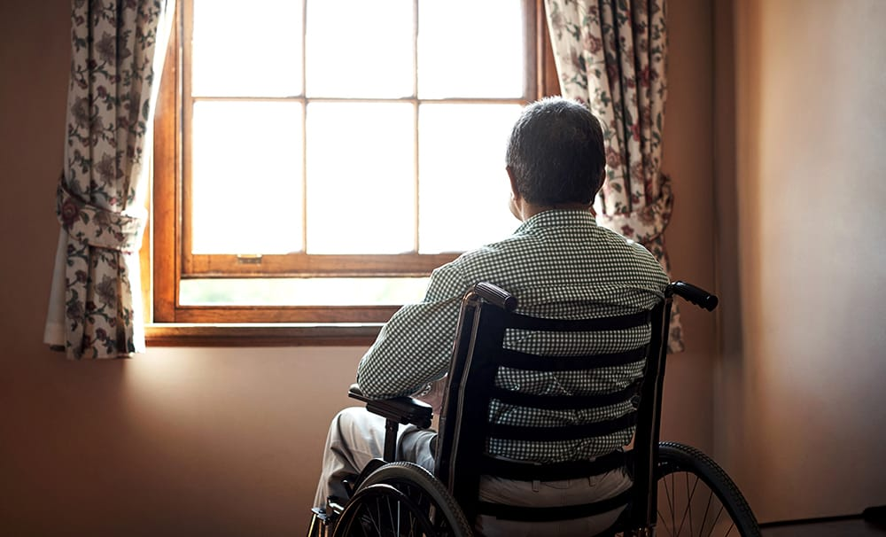
Mind and Body: The Complex Role of Social Resources in Understanding and Managing Depression in Older Adults
Seraphina Yong, Min-Wei Hung, Chien Wen (Tina) Yuan, Chih-Chiang Chiu, Ming-Chyi Huang, Chuang-Wen You.
In Proceedings of CSCW 2023 [Paper]
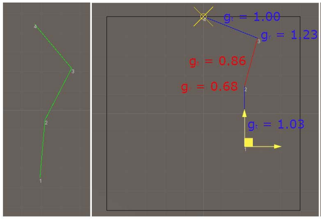
Inverse Kinematics Assistance for the Creation of Redirected Walking Paths
Jerald Thomas, Seraphina Yong, Evan Suma Rosenberg.
In Proceedings of ISMAR 2022 [Paper]

Daedalus in the Dark: Designing for Non-Visual Accessible Construction of Laser-Cut Architecture
Ruei-Che Chang, Chih-An Tsao, Fang-Ying Liao, Seraphina Yong, Tom Yeh, Bing-Yu Chen.
In Proceedings of UIST 2021 [Paper] [Video] [Talk]
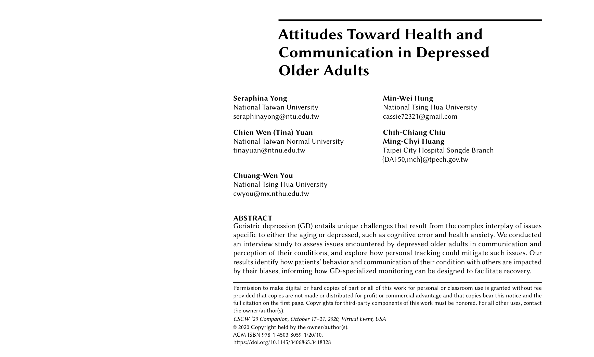
Attitudes Toward Health and Communication in Depressed Older Adults
Seraphina Yong, Min-Wei Hung, Chien Wen (Tina) Yuan, Chih-Chiang Chiu, Ming-Chyi Huang, Chuang-Wen You.
In Proceedings of CSCW 2020
(Poster)
[Paper] [Talk]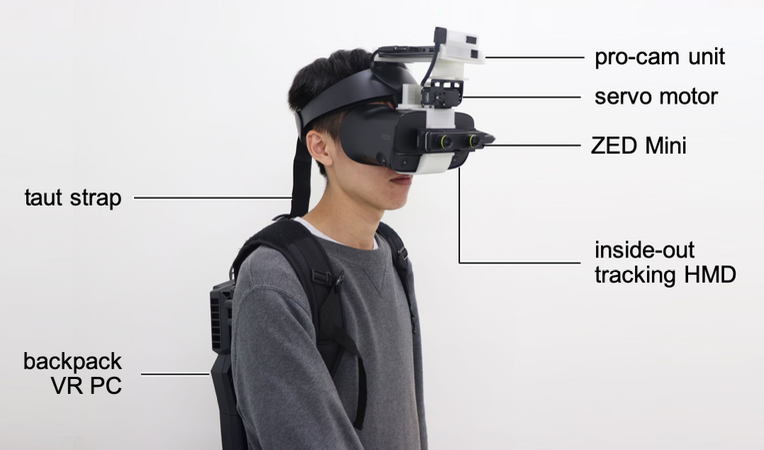
HMD Light: Sharing In-VR Experience via Head-Mounted Projector for Asymmetric Interaction
Chiu-Hsuan Wang, Seraphina Yong, Hsin-Yu Chen, Yuan-Syun Ye, Liwei Chan.
In Proceedings of UIST 2020 [Paper] [Video] [Talk]
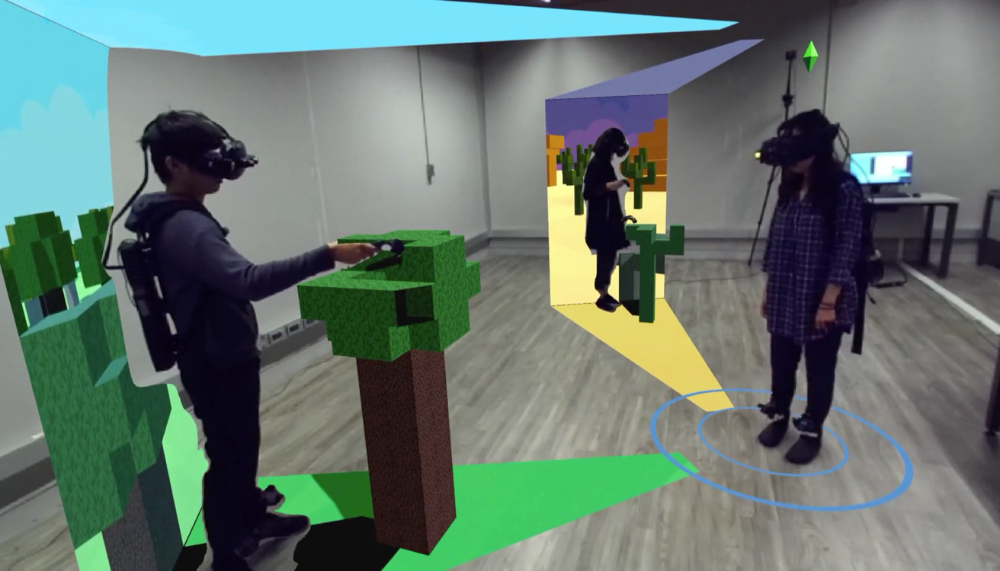
Slice of Light : Transparent and Integrative Transition among Realities in a Multi-HMD User Environment
Chiu-Hsuan Wang, Chia-En Tsai, Seraphina Yong, Liwei Chan.
In Proceedings of UIST 2020 [Paper] [Video] [Talk]
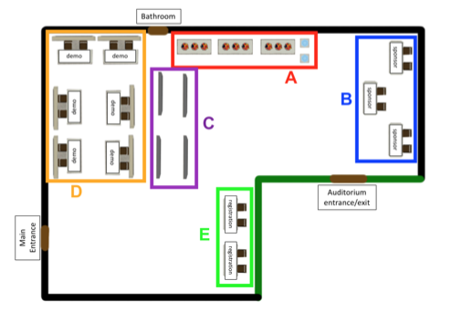
AuralTrace: Pitch-Based Sonified Referencing to Support Reception of Virtual Spatial Communication
Seraphina Yong, Yuan-Chi Tseng, Hao-Chuan Wang.
In Proceedings of Taiwan Computer Human Interaction Conference (TAICHI) 2019 🏆 Best Paper Award
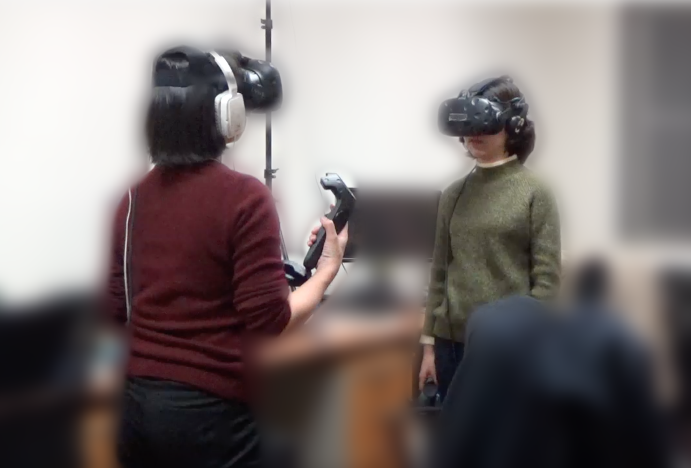
Using Spatialized Audio to Improve Human Spatial Knowledge Acquisition in Virtual Reality
Seraphina Yong, Hao-Chuan Wang.
In Proceedings of IUI 2018
(Poster)
[Paper]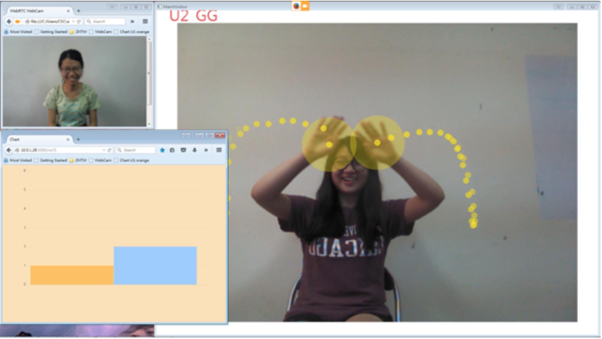
HandVis: Visualized Gesture Support for Remote Cross-Lingual Communication
Kuan-Yu Lin, Seraphina Yong, Shuo-Ping Wang, Chien-Tung Lai, Hao-Chuan Wang.
In Proceedings of CHI 2016
(EA)
[Paper]